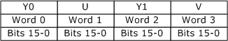
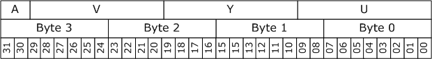

因为10-bit与16-bit内存布局是一样的，因此可以直接将10-bit yuv format当作16-bit yuv format使用，并且不会带来精度损失（注意：Y416以及Y410格式并不适用该规则）。
FOURCC命名规则:
如果内存布局是planner的，第一个字母是’P’，如果内存布局是packed的，第一个字母是’Y’
第二个是数字，标示chroma分量的采样比例，规则如下表
| Chroma samping | FOURCC code letter |
|---|---|
| 4:4:4 | 4 |
| 4:2:2 | 2 |
| 4:2:1 | 1 |
| 4:2:0 | 0 |
最后两个数字是每个通道的位深，16 or 10
按照上述规则的命名：
| FOURCC | Description |
|---|---|
| P016 | Planar, 4:2:0, 16-bit. |
| P010 | Planar, 4:2:0, 10-bit. |
| P216 | Planar, 4:2:2, 16-bit. |
| P210 | Planar, 4:2:2, 10-bit. |
| Y216 | Packed, 4:2:2, 16-bit. |
| Y210 | Packed, 4:2:2, 10-bit. |
| Y416 | Packed, 4:4:4, 16-bit |
| Y410 | Packed, 4:4:4, 10-bit. |
WORD refers to a little-endian 16-bit value
DWORD refers to a little-endian 32-bit value
属于4:2:0采样的格式有：P016，P010；他们的内存布局是一样的，不同的是P010只使用了每个通道的高10bit。


属于packed format，其内存布局如下：

packed format：


| Format | Chroma sampling | Packed or planar | Bits per channel |
|---|---|---|---|
| AYUV | 4:4:4 | Packed | 8 |
| Y410 | 4:4:4 | Packed | 10 |
| Y416 | 4:4:4 | Packed | 16 |
| AI44 | 4:4:4 | Packed | Palettized |
| YUY2 | 4:2:2 | Packed | 8 |
| Y210 | 4:2:2 | Packed | 10 |
| Y216 | 4:2:2 | Packed | 16 |
| P210 | 4:2:2 | Planar | 10 |
| P216 | 4:2:2 | Planar | 16 |
| NV12 | 4:2:0 | Planar | 8 |
| P010 | 4:2:0 | Planar | 10 |
| P016 | 4:2:0 | Planar | 16 |
| NV11 | 4:1:1 | Planar | 8 |